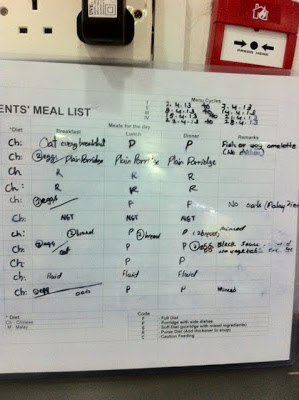

吃
爱丽通常在下午五点左右抵达托福园。到了六点晚餐时间，她已经把所有病房走透透，准备好协助护士们进行一天中的大事：吃。
三餐的规划在早一天已经开始。护士按照病人的情况或要求，列好清单，交给厨房，并备份留给隔天值班的同事。菜单分华巫两大类，以均衡营养为基础，必须清淡、易于吞咽消化及无刺激性。一般选用去筋嫩肉，低纤维蔬菜，并以蒸煮方式使食物软化。饮食分为软质、细碎、半流、细泥、流质数种，以配合病人的体质。其中， 细泥饮食乃是将细碎和半流质食物进一步搅烂至糊状，必要时添加浓稠剂，以避免因食物中的液体造成患者呛到。全流质饮食，则可能完全由管灌喂食。

护士和义工把餐车推到病房前，按照清单仔细盘点，再把餐盘一一无误地送到病人床前。如果病人能够自行进食，或身旁有家人协助喂食，大家会打打招呼，寒喧几句。昏睡中的病人，会有人轻柔地把他们唤醒，调整病床，用枕头替他们垫背，把餐桌移近。至于特别个案，大家都好像有个默契：留给爱丽。
今天，爱丽先尝试唤醒睡在角落的洪女士。洪女士已经八十七岁，餐盘上只有一碗稀粥，一碗浓汤。开始一分钟，洪女士没反应，爱丽跟护士说：她好像不想吃。护士说，昨天她吃完一碗稀粥。一会儿，洪女士睁开一只眼，皱着眉头，好像搞不清自己身在何处。 爱丽说：吃一点好吗？洪女士的头动了一下，看不出是点头还是摇头。 爱丽说：试一点吧，要不然会饿。她把洪女士的身子稍微调整，舀一小匙粥，递到洪女士口旁。洪女士的口微张，露出一口完整的牙齿，但没把粥吞进去。爱丽替她抹嘴，说：等一下吧。
生命走到尽头，吃或不吃，界线开始模糊。 当生命机能逐渐萎缩，消化系统通常率先关闭，强灌可能导致病人呕吐，浓液在食道或胃部堆塞，更会使病人在弥留中痛苦不堪。假如病人滴水不进，家属又担心病人挨饿受苦。所以，除了护士，只有受过特别训练的义工，才可以替病人喂食。这些义工用橙色吊带，不是普通的黄色。 这几年，在各处医院，病人家属的投诉率明显上升，托福园设立规定保护自家机构、员工、病人与义工。当然，受过喂食训练的义工只是少数。在工作日，来探望的家属和义工少了许多，护士必须照顾更多病人，有些病人就得多等一会才能用餐。
护士问爱丽：叶先生怎么样？爱丽说：他在等美女喂他呢。
隔壁， 七十多岁的叶先生还在睡觉。护士面带微笑把他唤醒，说：叶先生，我喂你好吗？ 这时，义工玲也在房内。玲是爱丽的侄女，是公认的美女，照片被选贴在托福园的义工专页上。但是，玲用黄色义工吊带，代表她只可递茶送饭，不可以替叶先生喂食。 隔床，张老太太正在帮她先生把假牙装上。对面的刘先生，指着肚子，用马来话对缅甸籍护士说：我这里很痛。护士指着餐盘上的药，说：吃完了再吃药，就不那么痛了。
这一边，洪女士的两只眼都睁开了，也吃了半碗稀粥。爱丽很满意，把碗交给护士，走到隔壁处理另一个案。她来到叶先生床前。这时，护士也已搞清楚，叶先生不喜欢今天的肉碎，他的稀粥只要配碎菜。爱丽问：叶先生，这位护士，你还满意吗？护士笑说：他没得选择，今天潘美拉过生日，没来上班。潘美拉是美女护士，上班时把秀发盘起，但掩不住秀丽。 爱丽指着玲道：潘美拉不要你了，我是她的阿姨，可以作主，你说如何？ 叶先生喃喃说了几句。 爱丽问：你说什么？要赶快呀，迟了就来不及了。这一下，连隔床的张先生张太太都笑起来了。
怪不得爱丽数十年如一日，在病房里如鱼得水。新来的义工以为，陪谈要一本正经，细数人生酸甜苦辣。爱丽明白：走到这一步，终点在望，何必正经八百，嬉笑怒骂，一餐又过，岂不乐哉。
叶先生开口，这次口齿异常清楚：迟了不要紧，这个走掉了，再来一个，人生不必斤斤计较。大家又笑。
这时，窗外的夕阳缓缓西下。义工和护士开始收拾，餐盘叮叮当当，与笑声一样清脆。